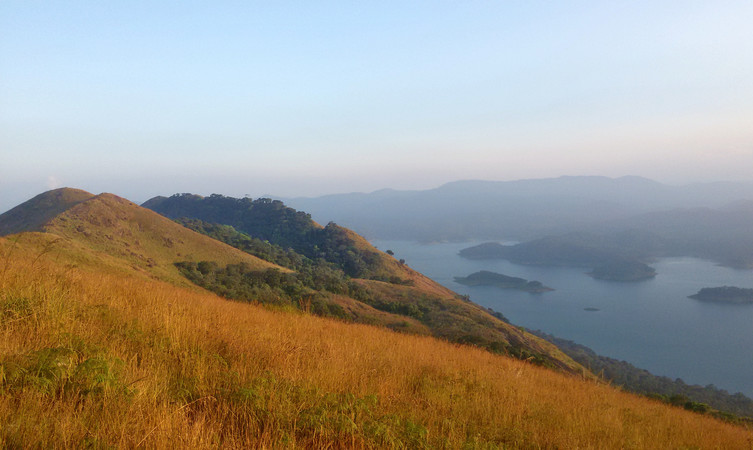

Idukki
Idukki district is a densely forested, mountainous region in the south Indian state of
Kerala. In the north, Anamudi mountain towers over Eravikulam National Park, where the rare, blue
Neelakurinji flower blooms every 12 years. Nearby, Munnar is a hill station known for its sprawling tea
plantations and Tea Museum. Farther south is the vast, curved Idukki Dam and Periyar National Park, a
tiger and elephant reserve.
Places to Visit in Idukki
- Idukki Dam.
- Idukki Wildlife Sanctuary.
- Munnar.
- Cheeyappara.
- Kalvari Mount.

The Idukki dam is constructed across the Periyar River, in a valley between the Kuravan and Kurathi hills in Kerala. The awe-inspiring, majestic dam, which stands at 167.68 meters (550 ft), is one of the highest arch dams in Asia. The dam, which is one of the Idukki tourist places, constructed by the Kerala government in 1975 and supports 780 MW hydroelectric power station that draws electricity from this dam.

Away from the hustle and bustle of the cities, the Idukki Wildlife is located in the Thodupuzha and Udumpanchola taluks of Idukki at an altitude of 450 – 750 ft above the sea level. The sanctuary, flanked on 3 sides by the tranquil waters of Idukki Lake, is housed amidst picturesque settings of tropical evergreen & semi-evergreen forests, meadows, and deciduous trees.The Wildlife Sanctuary, one of the places to visit in Idukki, houses hordes of wild elephants.

Munnar is a town in the Western Ghats mountain range in India’s Kerala state. A hill station and former resort for the British Raj elite, it's surrounded by rolling hills dotted with tea plantations established in the late 19th century. Eravikulam National Park, a habitat for the endangered mountain goat Nilgiri tahr, is home to the Lakkam Waterfalls, hiking trails and 2,695m-tall Anamudi Peak.

The Cheeyappara Waterfalls is situated on the Kochi-Madurai Highway in Idukki district. The avalanche of water flowing down the seven tiers of the rocky mountain presents a remarkable sight. The sound of gushing water, the mist, the white froth, and swirling waters at the bottom the waterfall add charm to the place. The 2 acres stretch of evergreen forests on the huge mountain lends enchantment to the waterfalls. The rocky terrain allures mountaineers and trekkers to a testing battle. Due to its proximity to the highway, the travelers and photographers take a sojourn to enjoy and click a few pictures on their way out. During the monsoon, the waters gush out in large quantities and become inaccessible to reach the bottom of the falls.

Kalvari or Calvary Mount, one of the Idukki tourist places, is a mountain situated at a distance of 5 km from Idukki. The Kalyanathandu viewpoint on Calvary Mount offers stunning visuals of the serene waters of the reservoir between Kuravan and Kurathi Hills and the Idukki dam. The trekkers and travelers can take a break at the nearby Tea Factory that offers the finest tea. The path from the Viewpoint to the hilltop is very steep and windy and throws a gauntlet to the trekkers.